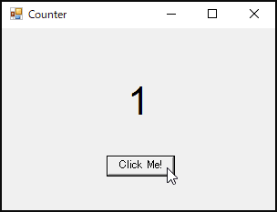

Windows Forms Application

Adelieでは「プロパティ」をサポートしていないため、dllからプロパティを呼び出す際には「set_」または「get_」を接頭辞にする必要があります。また、イベントハンドラの追加には「add_」を接頭辞にします。
.ctor()は特別な名前であり、externブロック内でのみ宣言できます。これはdllからコンストラクタを呼び出すことができます。その他、class、nested class、継承もexternブロック内でのみ使用可能です。
externが存在感を出していますが、将来的にこの部分を外部ライブラリにすることで、使用者はuse宣言のみで使用できるようにしたい狙いがあります。
#[link(name="System.Windows.Forms.dll", publickeytoken="B7 7A 5C 56 19 34 E0 89")]
extern {
mod System {
mod Windows {
mod Forms {
class Control {
class ControlCollection {}
impl ControlCollection {
fn Add(&self, value: Control) {}
}
}
impl Control {
fn set_Text(&self, _: string) {}
fn set_Location(&self, _: System::Drawing::Point) {}
fn set_Size(&self, _: System::Drawing::Size) {}
fn set_ClientSize(&self, _: System::Drawing::Size) {}
fn set_Font(&self, _: System::Drawing::Font) {}
fn get_Controls(&self) -> ControlCollection {}
fn add_Click(&self, event: System::EventHandler) {}
}
class ScrollableControl : Control {}
class ContainerControl : ScrollableControl {}
class Form : ContainerControl {}
impl Form {
fn .ctor() {}
}
class Label : Control {}
impl Label {
fn .ctor() {}
fn set_TextAlign(&self, _: System::Drawing::ContentAlignment) {}
}
class ButtonBase : Control {}
class Button : ButtonBase {}
impl Button {
fn .ctor() {}
}
class Application {}
impl Application {
fn Run(_: Form) {}
}
}
}
}
}
#[link(name="mscorlib.dll")]
extern {
mod System {
class EventHandler {}
class EventArgs {}
}
}
#[link(name="System.Drawing.dll", publickeytoken="B0 3F 5F 7F 11 D5 0A 3A")]
extern {
mod System {
mod Drawing {
class Font {}
impl Font {
fn .ctor(familyName: string, emSize: f32) {}
}
enum ContentAlignment {
MiddleCenter = 32,
}
}
}
}
#[link(name="System.Drawing.Primitives.dll", publickeytoken="B0 3F 5F 7F 11 D5 0A 3A")]
extern {
mod System {
mod Drawing {
struct Point {}
impl Point {
fn .ctor(x: i32, y: i32) {}
}
struct Size {}
impl Size {
fn .ctor(w: i32, h: i32) {}
}
}
}
}
fn main() {
let mut form: System::Windows::Forms::Form = System::Windows::Forms::Form::.ctor();
form.set_Text("Counter");
form.set_ClientSize(System::Drawing::Size::.ctor(300, 200));
let mut label: System::Windows::Forms::Label = System::Windows::Forms::Label::.ctor();
label.set_Text("1");
label.set_TextAlign(System::Drawing::ContentAlignment::MiddleCenter);
label.set_Size(System::Drawing::Size::.ctor(300, 64));
label.set_Location(System::Drawing::Point::.ctor(0, 50));
label.set_Font(System::Drawing::Font::.ctor("Arial", 32.0f32));
let mut button: System::Windows::Forms::Button = System::Windows::Forms::Button::.ctor();
button.set_Text("Click Me!");
button.set_Location(System::Drawing::Point::.ctor(115, 140));
form.get_Controls().Add(label);
form.get_Controls().Add(button);
let mut count: i32 = 1;
button.add_Click(|sender: Box<System::Windows::Forms::Button>, e: System::EventArgs| {
count += 1;
label.set_Text(count.to_string());
});
System::Windows::Forms::Application::Run(form);
}